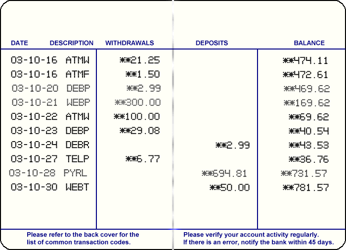

7.4.- Ejemplo práctico
Una vez que hemos visto la mayoría de las etiquetas que se pueden colocar en la documentación javadoc de una clase Java, vamos a ver un ejemplo práctico de cómo llevar a cabo esta tarea.
Aquí tienes una guía-resumen de todo aquello que debes documentar:
- documentación de la clase. Debes incluir una descripción lo más completa y detallada posible de la clase, explicando todo aquello que consideres que pueda ser de interés para otros programadores que vayan a utilizarla. Ten en cuenta que no tienen por qué conocer cómo está implementada por dentro, sino únicamente cómo utilizarla (cómo usar sus miembros que actúan como interfaz con el código externo: métodos y atributos públicos). Esta descripción se puede subdividir en:
- descripción corta o resumen de la clase. Consiste en todo el texto que incluyas hasta el primer punto (".") que contenga el texto. Es el texto que aparecerá en la tabla resumen de clases del paquete en el que se encuentre la clase;
- descripción larga de la clase. Todo el texto que haya después del primer punto. Ambas descripciones aparecerán en la descripción general de la clase;
- documentación de atributos públicos y protegidos (los miembros protegidos los verás en la próxima unidad) indicando para cada uno de ellos una pequeña descripción;
- si se trata de un atributo constante, incluye su valor usando la etiqueta
@value. Debes usar la etiqueta@valuey no escribir un literal en el comentario javadoc. De esta manera si se modificara el valor de la constante en el código, no habría que modificar el comentario.
- si se trata de un atributo constante, incluye su valor usando la etiqueta
- documentación de los métodos públicos y protegidos, incluyendo para cada método:
- descripción del método:
- descripción corta o resumen del método. Consiste en todo el texto que incluyas hasta el primer punto. Es el texto que aparecerá en la tabla resumen de métodos;
- descripción larga del método. Todo el texto que haya después del primer punto. Ambas descripciones aparecerán en la descripción detallada del método;
- descripción del valor devuelto (etiqueta
@return), si es que devuelve algo. Esta información aparecerá en la descripción detallada del método; - descripción de cada uno de los parámetros (etiqueta
@param); - descripción de las posibles excepciones que puede lanzar (etiqueta
@throws);
- descripción del método:
Es más que recomendable que una vez que hayas terminado de redactar todos tus comentarios javadoc generes la documentación para observar en los HTML obtenidos si están todos tus comentarios javadoc y los textos son correctos, apropiados y completos como para poder ser utilizados como manual de referencia de la biblioteca de clases sobre los elementos que puedes encontrar en un juego de tablero.
Ejercicio Resuelto

Estamos implementando una clase llamada CuentaBancaria que servirá para gestionar una cuenta bancaria. Los objetos de esa clase contarán con una serie de características como identificador de cuenta, fecha de creación, saldo, etc. y un repertorio de métodos que permitirán llevar a cabo ciertas acciones (ingresos, transferencias, extracciones, etc.).
Si queremos que esa clase pueda ser utilizada apropiadamente por otros desarrolladores que no hayan participado en su implementación, tendremos que ser muy rigurosos y detallados a la hora de documentar todos y cada uno de sus elementos. Si no, no sabrán como utilizarla. Debemos procurar elaborar un "manual de instrucciones" de la clase lo suficientemente completo como para que cualquier otra persona pueda utilizar esta clase en sus programas sin ayuda externa de los programadores originales.
Para ello disponemos de la herramienta Javadoc.
Lo primero que debemos hacer es proporcionar una descripción general de la clase explicando su utilidad.
Teniendo en cuenta que la cabecera de la clase es la siguiente:
public class CuentaBancaria {Si quisiéramos generar un javadoc que tuviera el siguiente aspecto:
¿Qué comentario javadoc incluirías antes de la cabecera de la clase para poder obtener esa documentación?
Teniendo en cuenta que la clase dispone de una serie de atributos públicos como DEFAULT_MAX_DESCUBIERTO, DEFAULT_SALDO, MAX_DESCUBIERTO etc.:
public class CuentaBancaria {
// ------------------------------------------------------------
// ATRIBUTOS ESTÁTICOS (de clase)
// ------------------------------------------------------------
// Atributos estáticos constantes públicos (rangos y requisitos de los atributos de objeto)
// Son públicos, para que cualquier código cliente pueda acceder a ellos
public static final double MAX_DESCUBIERTO = -2_000.00; // euros
public static final double MIN_EMBARGO = 0.00; // porcentaje
public static final double MAX_EMBARGO = 100.00; // porcentaje
public static final int MIN_YEAR = 1900; // año
public static final double MAX_SALDO = 50_000_000.00; // euros
public static final double DEFAULT_SALDO = 0.00; // euros
public static final double DEFAULT_MAX_DESCUBIERTO = 0.00; // euros Y que queremos que aparezcan documentados con el siguiente formato:
.")
¿Qué comentarios javadoc incluirías antes de cada uno de esos atributos para lograrlo?
Procura no escribir el valor literal de los atributos en tus comentarios javadoc. Puedes usar para ello la etiqueta @value.
La clase CuentaBancaria dispone de cuatro constructores:
public CuentaBancaria(double saldoInicial, LocalDate fechaCreacion, double limiteDescubierto) throws IllegalArgumentException {
. . .
. . .
}
public CuentaBancaria(double saldoInicial, LocalDate fechaCreacion) throws IllegalArgumentException {
this(saldoInicial, fechaCreacion, CuentaBancaria.DEFAULT_MAX_DESCUBIERTO);
}
public CuentaBancaria(double saldoInicial) throws IllegalArgumentException {
this(saldoInicial, LocalDate.now());
}
public CuentaBancaria() {
this(CuentaBancaria.DEFAULT_SALDO);
}Y deseamos que aparezcan documentados de la siguiente manera en el resumen de constructores:
Además, en la descripción detallada del primer constructor (el que tiene tres parámetros) nos gustaría que apareciera la siguiente información:
")
¿Qué comentarios javadoc y qué etiquetas utilizarías para lograrlo?
El método ingresar tiene la siguiente cabecera:
public void ingresar(double cantidad) throws IllegalArgumentException, IllegalStateException {Y nos gustaría que apareciera documentado de la siguiente manera:
")
¿Qué comentarios javadoc escribirías? ¿Qué etiquetas utilizarías? ¿Necesitarías la etiqueta @return?
El método toString tiene la siguiente cabecera:
@Override
public String toString() {Y nos gustaría que apareciera documentado de la siguiente manera:
")
¿Qué etiquetas necesitarías para ello? Escribe el javadoc apropiado para generar esa documentación. Fíjate que en este caso hay bastante texto y está muy formateado. Tendrás que hacer uso de tus habilidades HTML para intentar que se parezca lo máximo posible...